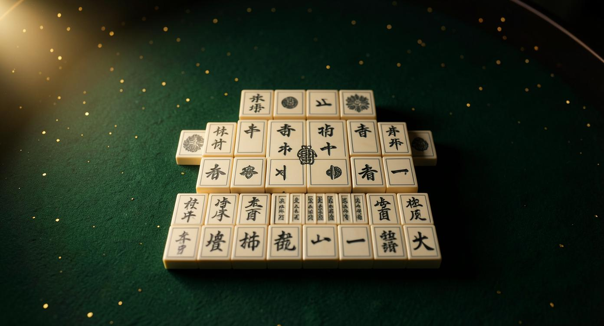
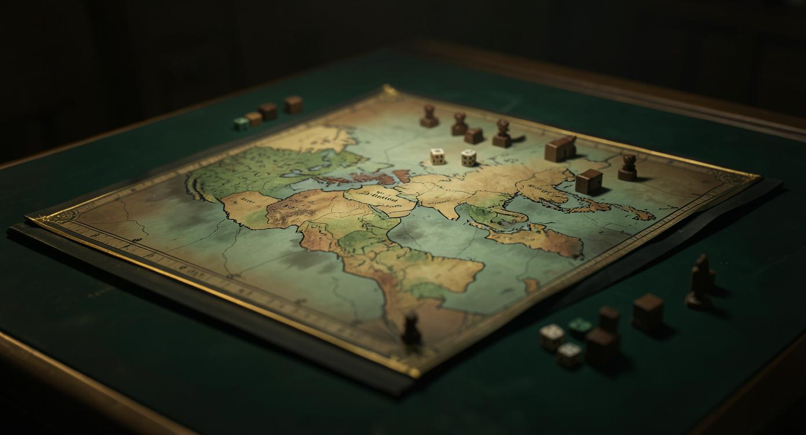
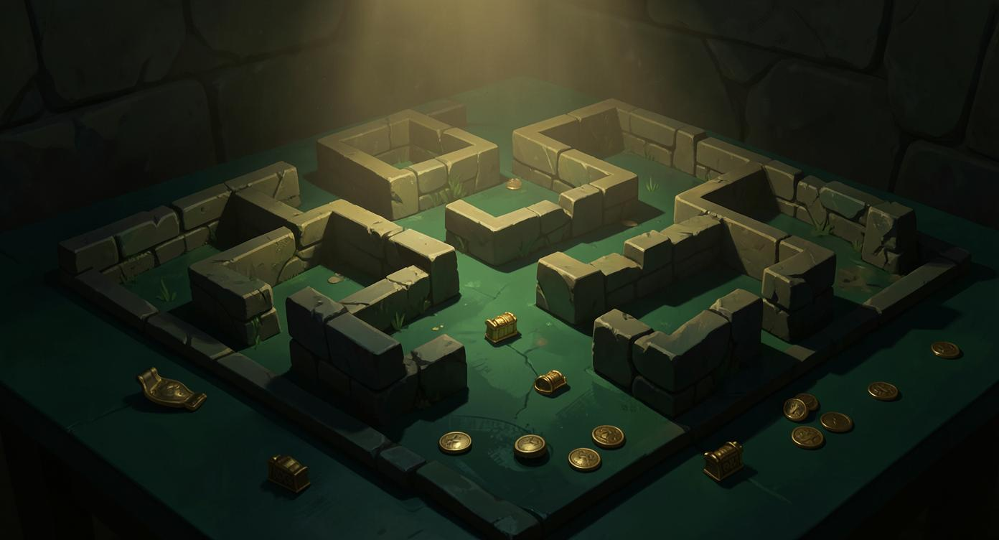
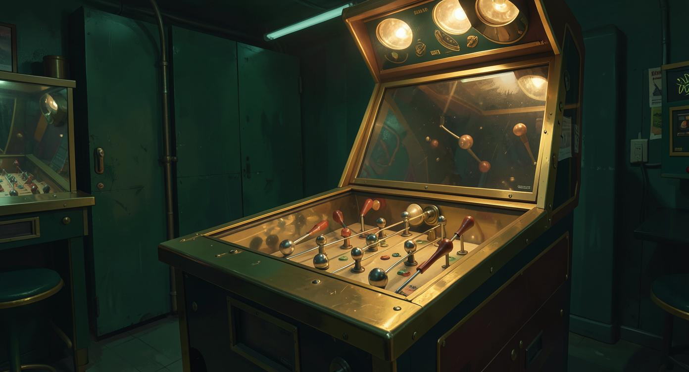
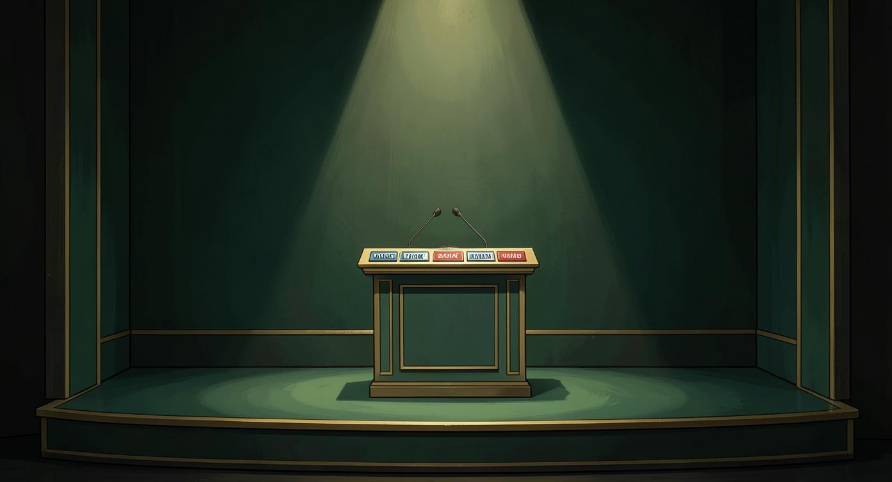

Highlights
Alle ansehen ›
★ HighlightBrettspieleMahjongSteine paaren, Schichten freilegen – ruhiges Denkspiel mit 144 Steinen.
★ Highlight Online 2–6Jetzt spielen ›
Würfelspiele · Online10.000Sechs Würfel, sichere Punkte, ein Tisch für zwei bis sechs – auch online.
Jetzt spielen ›Raum + Chat

★ Highlight Online 2–6Brettspiele · OnlineRisiko – Welt erobernWeltkarte, Armeen, Würfel – Eroberung für zwei bis sechs Spieler.
Jetzt spielen ›Raum + Chat

★ Highlight Online 2–4Brettspiele · OnlineDas verrückte LabyrinthGänge schieben, Schätze einsammeln – das Brett verändert sich mit jedem Zug.
Jetzt spielen ›Raum + Chat

★ HighlightArcade und GeschicklichkeitFlipperSilberkugel, Flipperfinger, Mittelstift – eine Runde am Tisch.
Jetzt spielen ›

★ Highlight Online 2–6Quiz und Partyspiele · OnlineScherzshowScherzshow mit Moderator: Fragen, Antworten, Punkte – auch mit Freunden.
Jetzt spielen ›Raum + Chat
Kategorien
WürfelspieleKniffel, 10.000, Mäxchen – hier entscheiden die Würfel.23 SpieleKartenspieleUNO, Mau Mau, Poker und Solitär – alles mit einem Blatt Karten.11 SpieleBrettspieleSchach, Mühle, Halma, Risiko – Brett- und Gesellschaftsspiele.22 SpieleDenkspieleSudoku, Memory, Mastermind – knobeln, merken und kombinieren.15 SpieleArcade und GeschicklichkeitPac-Man, Tetris, Snake, Flipper – Klassiker und ruhige Finger.21 SpieleQuiz und PartyspieleRateshows und Partyspiele – schnell antworten, gemeinsam lachen.1 Spiel
Würfelspiele
23Kniffel, 10.000, Mäxchen – hier entscheiden die Würfel.
10.000Sechs Würfel, Punkte sichern – wer zuerst 10.000 hat.BotsLokal & OnlineModi ›Auf nach BostonWürfelrunde mit Ansagen, auch die Würfe der anderen zählen.BotsLokal & OnlineModi ›ChicagoFilze, Würfe und der beste Wurf der Runde.BotsLokal & OnlineModi ›Der TurmEigene Stichzahl treffen und Steine aus dem Turm holen.BotsLokal & OnlineModi ›Die böse DreiSo oft würfeln wie du willst – eine Drei löscht den Zug.BotsLokal & OnlineModi ›Dufte HundertPasch wird multipliziert, sonst addiert – Ziel 100.BotsLokal & OnlineModi ›Eins bis SechzehnDie Zahlen 1 bis 16 aus drei Würfeln bilden.BotsLokal & OnlineModi ›Fenster würfelnNur Zweien zählen – eine 1, zwei 4, drei 9.BotsLokal & OnlineModi ›Gestrichene ZwölfSummen von 2 bis 12 würfeln und streichen.BotsLokal & OnlineModi ›Hin und herJede Zahl umschalten – alle sechs gleichzeitig streichen.BotsLokal & OnlineModi ›Hohe HausnummerDrei Würfe auf Hunderter, Zehner und Einer verteilen.BotsLokal & OnlineModi ›JuleDie Treppe 1 bis 6 hoch und zurück würfeln.BotsLokal & OnlineModi ›KniffelFünf Würfel, drei Würfe, 13 Kategorien.BotsLokal & OnlineModi ›Lügen MäxchenZwei verdeckte Würfel, Ansage und Zweifel.BotsLokal & OnlineModi ›PärchenVier Würfel, zwei zählen plus, zwei minus.BotsLokal & OnlineModi ›PigWürfeln und sammeln – aber vor der Eins aufhören.BotsLokal & OnlineModi ›Plus-MinusNeun Würfe im Muster plus, plus, minus.BotsLokal & OnlineModi ›RentmeisterSechs feste Zahlen, jede mal einem gewählten Würfel.BotsLokal & OnlineModi ›Ship Captain CrewSchiff, Kapitän, Crew – dann 500 Punkte sammeln.BotsLokal & OnlineModi ›Streichhölzer auswürfelnEinsen nach links, Sechsen in die Mitte – Hölzer räumen.BotsLokal & OnlineModi ›Teure Sieben2–6 und 8–12 streichen, die Sieben zählt doppelt.BotsLokal & OnlineModi ›Unter oder über siebenVor dem Wurf ansagen – richtig bringt Punkte.BotsLokal & OnlineModi ›WürfelpokerFünf Würfel, zwei Nachwürfe, volle Pokerwertung.BotsLokal & OnlineModi ›
Alle 23 ansehen ›Kartenspiele
11UNO, Mau Mau, Poker und Solitär – alles mit einem Blatt Karten.
17 und 4Gegen die Bank auf 21 kommen, ohne zu überkaufen.OnlineModi ›31 SchwimmenDrei Karten tauschen und klopfen – wer am nächsten an 31 ist.Lokal & OnlineModi ›ArschlochKarten abwerfen und am Ende die Plätze tauschen.Lokal & OnlineModi ›BaccaraAuf Spieler oder Bank setzen – näher an neun gewinnt.OnlineModi ›CaboVier verdeckte Karten tauschen und möglichst niedrig bleiben.OnlineModi ›Mau MauFarbe oder Zahl bedienen, sieben ziehen, Mau sagen.Lokal & OnlineModi ›PokerTexas Hold'em mit Blinds, Einsatzrunden und Showdown.OnlineModi ›Sechsundsechzig24 Karten, Stiche sammeln und 66 Punkte erreichen.OnlineModi ›SKYJOKarten aufdecken und tauschen – die niedrigste Summe gewinnt.Lokal & OnlineModi ›SolitärKlondike, Spider und mehr – Kartenlegen in Ruhe.SoloSpielen ›UNOFarben wechseln, aussetzen und mit +2 und +4 ärgern.Lokal & OnlineModi ›
Alle 11 ansehen ›Brettspiele
22Schach, Mühle, Halma, Risiko – Brett- und Gesellschaftsspiele.
Backgammon24 Punkte, Würfel und der eigene Heimbereich.Lokal & OnlineModi ›BingoZahlen ziehen und Reihen auf der eigenen Karte abhaken.SoloOnlineModi ›DameMit Schlagzwang – wer keine Figur mehr hat, verliert.Lokal & OnlineModi ›Das verrückte LabyrinthGänge verschieben und Gegenstände einsammeln.Lokal & OnlineBotsModi ›DominoPassende Steine anlegen, sonst nachziehen.Lokal & OnlineBotsModi ›GänsespielDas Rennen ums Brett mit seinen Glücksfeldern.Lokal & OnlineModi ›GoAuf 9×9 Gebiet gewinnen und Steine schlagen.Lokal & OnlineModi ›HalmaFiguren ins gegenüberliegende Haus bringen.SoloLokal & OnlineBotsModi ›Hold the LineDie eigene Linie gegen den Gegner halten.Lokal & OnlineModi ›KalahaSteine verteilen und im eigenen Kasten sammeln.Lokal & OnlineModi ›KäsekästchenLinien ziehen und Kästchen schließen.Lokal & OnlineModi ›MahjongSteinpaare finden und das Brett abräumen.SoloSpielen ›Mensch ärgere dich nichtWürfeln, rauswerfen und als Erster im Ziel.Lokal & OnlineModi ›MühleSetzen, ziehen, Mühlen schließen und Steine abräumen.Lokal & OnlineModi ›ReversiSteine einschließen und umdrehen – Mehrheit gewinnt.Lokal & OnlineModi ›Risiko – Welt erobernArmeen, Würfel und Missionen – die Welt erobern.Lokal & OnlineBotsModi ›SchachAlle Regeln, matt oder Aufgabe.Lokal & OnlineModi ›Schiffe versenkenFlotten setzen und die des Gegners treffen.OnlineModi ›Schlangen und LeiternWürfeln, klettern und wieder zurückfallen.Lokal & OnlineModi ›SimLinien setzen – wer das letzte Dreieck schließt, verliert.Lokal & OnlineModi ›Tic Tac ToeDrei gewinnt auf dem Neon-Brett.Lokal & OnlineModi ›Vier gewinntSteine fallen lassen und vier in eine Reihe bringen.Lokal & OnlineModi ›
Alle 22 ansehen ›Denkspiele
15Sudoku, Memory, Mastermind – knobeln, merken und kombinieren.
1×1-TrainingEinmaleins üben – gegen die Zeit oder andere.SoloOnlineModi ›15-PuzzleSteine schieben, bis die Zahlen stimmen.SoloRekordSpielen ›21 StreichhölzerReihum ein bis drei nehmen – wer das letzte nimmt, verliert.Lokal & OnlineModi ›BejeweledJuwelen tauschen und Reihen sprengen.SoloRekordSpielen ›GalgenmännchenBuchstaben raten, bevor das Männchen fertig ist.SoloOnlineModi ›Lights OutLichter ausschalten – jeder Klick kippt die Nachbarn.SoloRekordSpielen ›MastermindDen Farbcode in möglichst wenigen Versuchen knacken.SoloOnlineRekordModi ›MemoryKartenpaare finden und im Kopf behalten.SoloOnlineRekordModi ›MinensucherMinen markieren, ohne auf eine zu treten.SoloRekordSpielen ›Paare findenDasselbe Brett lösen – wer ist schneller?SoloOnlineModi ›SameGameGleichfarbige Blöcke wegklicken, bis nichts mehr bleibt.SoloRekordSpielen ›SokobanKisten in die richtigen Ecken schieben.SoloRekordSpielen ›Steine-SolitärSteine überspringen, bis nur einer übrig bleibt.SoloRekordSpielen ›SudokuZahlen 1 bis 9 in jede Reihe, Spalte und Box.SoloRekordSpielen ›WortsucheWörter im Buchstabengitter finden.SoloOnlineModi ›
Alle 15 ansehen ›Arcade und Geschicklichkeit
21Pac-Man, Tetris, Snake, Flipper – Klassiker und ruhige Finger.
AciaFarbblöcke verbinden und eigene Level bauen.SoloLokalSpielen ›ArkanoidMit dem Schläger den Ball halten und Steine abbrechen.SoloRekordSpielen ›BombermanBomben legen und den Gegner in die Flammen locken.Lokal & OnlineModi ›Bubble ShooterBlasen schießen und gleiche Farben sprengen.SoloLokal & OnlineRekordModi ›Doodle JumpPlattform für Plattform nach oben springen.SoloRekordSpielen ›DurstLevel-Abenteuer – Flaschen sammeln und weiterkommen.SoloSpielen ›Flappy BirdDurch die Lücken flattern, so weit es geht.SoloRekordSpielen ›FlipperDie Kugel mit den Flippern oben halten.SoloRekordSpielen ›FroggerÜber Straße und Fluss nach Hause.SoloRekordSpielen ›Gold MinerMit dem Haken Gold und Schätze hochziehen.SoloSpielen ›Labyrinth Plus!Kugel durchs Labyrinth kippen und Ziele treffen.SoloRekordSpielen ›Pac-ManPunkte fressen und den Geistern entkommen.SoloRekordSpielen ›PongSchläger unten und oben – der Ball wird schneller.Lokal & OnlineBotsRekordModi ›SnakeFressen, wachsen und nicht in die eigene Spur fahren.SoloOnlineRekordModi ›Space InvadersReihen von Aliens abschießen und Deckung nutzen.SoloRekordSpielen ›Super PimmelchenRetro-Hüpfer mit eigenen Leveln.SoloRekordSpielen ›TetrisReihen füllen, bevor der Stapel oben ankommt.SoloOnlineModi ›Tower BloxxStockwerke stapeln, bis der Turm wächst.SoloRekordSpielen ›TronLichtspuren ziehen – wer anstößt, verliert.Lokal & OnlineModi ›Voigt ZoneFlächen abgrenzen und Gegner aussperren.SoloSpielen ›RotlichtVom Straßenstrich zum Luxusimperium – Idle-Clicker mit Personal, Ausbau und Offline-Ertrag.SoloSpielen ›
Alle 21 ansehen ›Quiz und Partyspiele
1Rateshows und Partyspiele – schnell antworten, gemeinsam lachen.
Werkzeuge & Extras
12Keine Spiele – Hilfsmittel, Apps und Editoren. Die Spiele bleiben in ihren Kategorien.
WürfelbecherSechs Würfel, einzeln festhaltenÖffnen ›SanduhrNeon-Sanduhr mit LaufzeitÖffnen ›TaschenrechnerNeon-TaschenrechnerÖffnen ›Zoll-VergleichZoll und Zentimeter umrechnenÖffnen ›MalenKritzelbrett, auch mit Connector-RaumÖffnen ›Level-Editor DurstEigene Level für Durst bauenÖffnen ›Level-Editor SchlangenspielEigene Level für Super PimmelchenÖffnen ›TrashyGecko-AppSpiele-App für Android, 95 Spiele offlineÖffnen ›Meine Android AppT.Spiele als AppÖffnen ›iOS AppsT.Spiele fürs iPhoneÖffnen ›Trashygeckos ConnectorSpielräume und ChatÖffnen ›WLAN-UniversalfernbedienungFernseher im WLAN steuernÖffnen ›